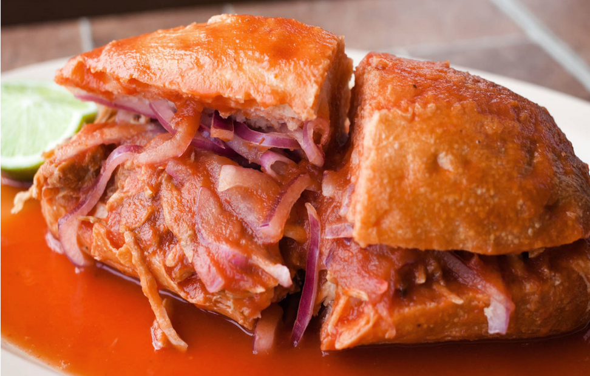

TORTA AHOGADA

Receta
INGREDIENTES
- 700g de jitomates maduros picados
- 1 diente de ajo
- 1/4 de taza de cebolla blanca picada
- 1/2 cucharadita de mejorana seca
- 1 cucharadita de orégano seco
- 2 dientes de ajo
- 1/2 cucharadita de sal o al gusto
- 1/4 de cucharadita de pimienta negra recién molida
- 1 cucharada de aceite
- 2 tazas de caldo o agua, al gusto
PARA PREPARAR
- En la jarra de la licuadora, pon los jitomates, el ajo, la cebolla, la mejorana, el orégano, los clavos, la sal y la pimienta y licúa hasta obtener un puré suave.
- En un sartén, calienta el aceite a fuego medio. Cuando esté muy caliente, sin llegar a humear, vierte la salsa de tomate. Tapa el sartén parcialmente y cocina durante 5 minutos, hasta que la salsa se espese y se sazone. Añade el caldo, revuelve y cocina durante un par de minutos más. Apaga el fuego y aparta la salsa.
PARA ARMAR LA TORTA
Desmenuza las carnitas y mantenlas calientes, igual que el pan y las salsas.
Corta los birotes a la mitad sin separarlos completamente. Uno por uno, con la apertura hacia arriba, rellénalos generosamente con las carnitas. Luego, córtalos a la mitad y ponlos en un plato hondo. Vierte primero la salsa de tomate encima, y luego ponle a cada torta salsa picante al gusto de cada invitado.
Derechos Reservados Luisfersaurus©